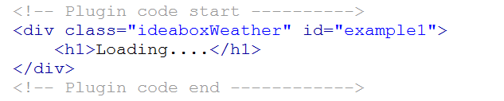
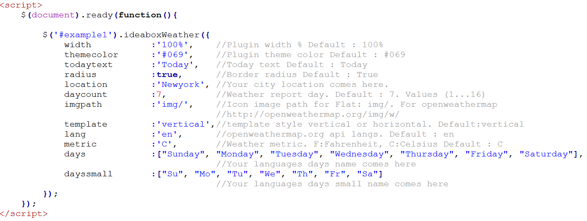

Ideabox - Flat Responsive Weather Plugin
JQuery Plugin
Thank you for purchasing my plugin :)
Main Features
- Modern
- Flat
- Easy Install
- Responsive
- Mobile Friendly
- This plugin supported openweathermap.com languages.
- Unlimited color options.
- Flat or openweathermap.com icon style.
- 1-16 day weather report.
- Fahrenheit or Celsius metric options.
- Vertical or horizontal options.
- With border radius or without options
Example HTML Data

Plugin Installation
